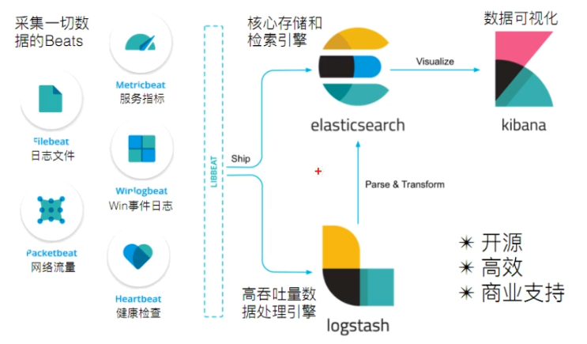
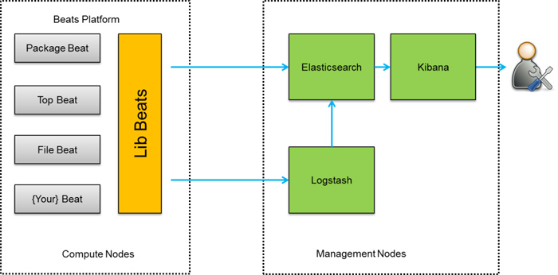

网址
官网
官方详细说明
https://www.elastic.co/cn/what-is
文件存储：
G:\软件\编程\分布式集群\ELK\资料-Elastic Stack 从入门到实践
ELK概念
需求背景：
- 业务发展越来越庞大，服务器越来越多
- 各种访问日志、应用日志、错误日志量越来越多，导致运维人员无法很好的去管理日志
- 开发人员排查问题，需要到服务器上查日志，不方便
- 运营人员需要一些数据，需要我们运维到服务器上分析日志
为什么要用到ELK：
一般我们需要进行日志分析场景：直接在日志文件中 grep、awk 就可以获得自己想要的信息。但在规模较大也就是日志量多而复杂的场景中，此方法效率低下，面临问题包括日志量太大如何归档、文本搜索太慢怎么办、如何多维度查询。需要集中化的日志管理，所有服务器上的日志收集汇总。常见解决思路是建立集中式日志收集系统，将所有节点上的日志统一收集，管理，访问。
大型系统通常都是一个分布式部署的架构，不同的服务模块部署在不同的服务器上，问题出现时，大部分情况需要根据问题暴露的关键信息，定位到具体的服务器和服务模块，构建一套集中式日志系统，可以提高定位问题的效率。
一个完整的集中式日志系统，需要包含以下几个主要特点：
- 收集－能够采集多种来源的日志数据
- 传输－能够稳定的把日志数据传输到中央系统
- 存储－如何存储日志数据
- 分析－可以支持 UI 分析
- 警告－能够提供错误报告，监控机制
而ELK则提供了一整套解决方案，并且都是开源软件，之间互相配合使用，完美衔接，高效的满足了很多场合的应用。是目前主流的一种日志系统。
ELK简介：
ELK是三个开源软件的缩写，分别为：Elasticsearch 、 Logstash以及Kibana , 它们都是开源软件。不过现在还新增了一个Beats，它是一个轻量级的日志收集处理工具(Agent)，Beats占用资源少，适合于在各个服务器上搜集日志后传输给Logstash，官方也推荐此工具，目前由于原本的ELK Stack成员中加入了 Beats 工具所以已改名为Elastic Stack。
Elastic Stack包含：
- Elasticsearch是个开源分布式搜索引擎，提供搜集、分析、存储数据三大功能。它的特点有：分布式，零配置，自动发现，索引自动分片，索引副本机制，restful风格接口，多数据源，自动搜索负载等。详细可参考Elasticsearch权威指南
- Logstash 主要是用来日志的搜集、分析、过滤日志的工具，支持大量的数据获取方式。一般工作方式为c/s架构，client端安装在需要收集日志的主机上，server端负责将收到的各节点日志进行过滤、修改等操作在一并发往elasticsearch上去。
- Kibana 也是一个开源和免费的工具，Kibana可以为 Logstash 和 ElasticSearch 提供的日志分析友好的 Web 界面，可以帮助汇总、分析和搜索重要数据日志。
- Beats在这里是一个轻量级日志采集器，其实Beats家族有6个成员，早期的ELK架构中使用Logstash收集、解析日志，但是Logstash对内存、cpu、io等资源消耗比较高。相比 Logstash，Beats所占系统的CPU和内存几乎可以忽略不计
ELK Stack （5.0版本之后）–> Elastic Stack == （ELK Stack + Beats）。目前Beats包含六种工具：
- Packetbeat： 网络数据（收集网络流量数据）
- Metricbeat： 指标 （收集系统、进程和文件系统级别的 CPU 和内存使用情况等数据）
- Filebeat： 日志文件（收集文件数据）
- Winlogbeat： windows事件日志（收集 Windows 事件日志数据）
- Auditbeat：审计数据 （收集审计日志）
- Heartbeat：运行时间监控 （收集系统运行时的数据）
关于x-pack工具：
- x-pack对Elastic Stack提供了安全、警报、监控、报表、图表于一身的扩展包，是收费的，所以本文不涉及x-pack的安装
ELK架构图：

首先beat采集数据，之后可以有两条途径：1. 直接发送elasticsearch储存起来；2. 发送logstash经过logstash处理后发送给elasticsearch
最后在kibana进行数据可视化
安装部署结构
存在多个应用服务器AppServer，每个服务器上都要安装Logstash用来上传本机的日志存储到ElasticSearch(现使用beats进行文件收集)，为保险起见应部署多个ElasticSearch服务器(防止挂了)，Kibana获取ElasticSearch服务器中存储的数据整理成页面供用户查看
用户查看时，查看Logstash服务器什么也不能查到，查看ElasticSearch服务器，查看到的是一大堆日志不够立体，查看Kibana可以看到整理过的数据页面
Elasticsearch (核心)
Elasticsearch基于java ,是个开源分布式搜索引擎,它的特点有:分布式,零配置,自动发现,索引自动分片,索引副本机制, restful风格接口,多数据源,自动搜索负载等。
ElasticSearch是一个基于Lucene的搜索服务器。它提供了一个分布式多用户能力的全文搜索引擎，基于RESTful web接口。Elasticsearch是用Java开发的，并作为Apache许可条款下的开放源码发布，是当前流行的企业级搜索引擎。设计用于云计算中，能够达到实时搜索，稳定，可靠，快速，安装使用方便。
我们建立一个网站或应用程序，并要添加搜索功能，但是想要完成搜索工作的创建是非常困难的。我们希望搜索解决方案要运行速度快，我们希望能有一个零配置和一个完全免费的搜索模式，我们希望能够简单地使用JSON通过HTTP来索引数据，我们希望我们的搜索服务器始终可用，我们希望能够从一台开始并扩展到数百台，我们要实时搜索，我们要简单的多租户，我们希望建立一个云的解决方案。因此我们利用Elasticsearch来解决所有这些问题及可能出现的更多其它问题。
Elasticsearch (yi la si tei ke se chi) 是一个分布式、RESTful 风格的搜索和数据分析引擎，能够解决不断涌现出的各种用例。 作为 Elastic Stack 的核心，它集中存储您的数据，帮助您发现意料之中以及意料之外的情况。
Elasticsearch 是一个分布式的开源搜索和分析引擎，适用于所有类型的数据，包括文本、数字、地理空间、结构化和非结构化数据。Elasticsearch 在 Apache Lucene 的基础上开发而成，由 Elasticsearch N.V.（即现在的 Elastic）于 2010 年首次发布。Elasticsearch 以其简单的 REST 风格 API、分布式特性、速度和可扩展性而闻名，是 Elastic Stack 的核心组件；Elastic Stack 是适用于数据采集、充实、存储、分析和可视化的一组开源工具。人们通常将 Elastic Stack 称为 ELK Stack（代指 Elasticsearch、Logstash 和 Kibana），目前 Elastic Stack 包括一系列丰富的轻量型数据采集代理，这些代理统称为 Beats，可用来向 Elasticsearch 发送数据。
与mysql的区别：mysql更倾向于做数据的持久化存储及管理，即CRUD，若单表达到百万级以上的数据，需要进行检索及查询，将会非常慢
mysql支持事务查询，而Elasticsearch不支持，需要实现事务功能时会很麻烦
Logstash
Logstash基于java ,是一个开源的用于收集，分析和存储日志的工具。
Kibana
Kibana基于nodejs ,也是一个开源和免费的工 具, Kibana可以为Logstash和ElasticSearch提供的日志分析友好的Web界面,可以汇总、分析和搜索重要数据日志。
Beats
Beats是elastic公司开源的一款采集系统监控数据的代理agent，是在被监控服务器上以客户端形式运行的数据收集器的统称，可以直接把数据发送给Elasticsearch或者通过Logstash发送给Elasticsearch ，然后进行后续的数据分析活动。
Packetbeat：是一个网络数据包分析器，于监控、收集网络流量信息，Packetbeat嗅探服务器之间的流量，解析应用层协议，并关联到消息的处理，期持ICMP (V4 and Vv6)、DNS、HTTP、Mysql、PostgreSQL、Redis、MongoDB、Memcache等协议；
Filebeat：用于监控、收集服务器日志文件，其已取代logstash、forwarder；
Metricbeat：可定期获取外部系统的监控指标信息，可以监控、收集Apache、HAProxy、 MongoDBMySQL、 Nginx、 PostgreSQL、 Redis、 System、 Zookeeper等服务；
Winlogbeat：用于监控、收集Windows系统的日志信息；
ELK多种架构及优劣
1 架构一 Elasticsearch + Logstash + Kibana
如图1，这是最简单的一种ELK架构方式。优点是搭建简单，易于上手。缺点是Logstash耗资源较大，运行占用CPU和内存高。另外没有消息队列缓存，存在数据丢失隐患。建议供学习者和小规模集群使用。
此架构首先由Logstash分布于各个节点上搜集相关日志、数据，并经过分析、过滤后发送给远端服务器上的Elasticsearch进行存储。Elasticsearch将数据以分片的形式压缩存储并提供多种API供用户查询，操作。用户亦可以更直观的通过配置Kibana Web Portal方便的对日志查询，并根据数据生成报表（详细过程和配置在此省略）。
图1 ELK架构一
2 架构二 引入消息队列
第二种架构（图2）引入了消息队列机制，位于各个节点上的Logstash Agent先将数据/日志传递给Kafka（或者Redis），并将队列中消息或数据间接传递给Logstash，Logstash过滤、分析后将数据传递给Elasticsearch存储。最后由Kibana将日志和数据呈现给用户。因为引入了Kafka（或者Redis）,所以即使远端Logstash server因故障停止运行，数据将会先被存储下来，从而避免数据丢失。
图2 ELK架构二
这种架构适合于较大集群的解决方案，但由于Logstash中心节点和Elasticsearch的负荷会比较重，可将他们配置为集群模式，以分担负荷，这种架构的优点在于引入了消息队列机制，均衡了网络传输，从而降低了网络闭塞尤其是丢失数据的可能性，但依然存在Logstash占用系统资源过多的问题。
3 架构三 引入Logstash-forwarder
第三种架构（图3）引入了Logstash-forwarder。首先，Logstash-forwarder将日志数据搜集并统一发送给主节点上的Logstash，Logstash分析、过滤日志数据后发送至Elasticsearch存储，并由Kibana最终将数据呈现给用户。
图3 ELK架构三
这种架构解决了Logstash在各计算机点上占用系统资源较高的问题。经测试得出，相比Logstash，Logstash-forwarder所占用系统CPU和MEM几乎可以忽略不计。另外，Logstash-forwarder和Logstash间的通信是通过SSL加密传输，起到了安全保障。如果是较大集群，用户亦可以如结构三那样配置logstash集群和Elasticsearch集群，引入High Available机制，提高数据传输和存储安全。更主要的配置多个Elasticsearch服务，有助于搜索和数据存储效率。但在此种架构下发现Logstash-forwarder和Logstash间通信必须由SSL加密传输，这样便有了一定的限制性。
4 架构三 将Logstash-forwarder替换为Beats
第四种架构（图4），将Logstash-forwarder替换为Beats。经测试，Beats满负荷状态所耗系统资源和Logstash-forwarder相当，但其扩展性和灵活性有很大提高。Beats platform目前包含有Packagebeat、Topbeat和Filebeat三个产品，均为Apache 2.0 License。同时用户可根据需要进行二次开发。

图4 ELK架构四
这种架构原理基于第三种架构，但是更灵活，扩展性更强。同时可配置Logstash 和Elasticsearch 集群用于支持大集群系统的运维日志数据监控和查询。
不管采用上面哪种ELK架构，都包含了其核心组件，即：Logstash、Elasticsearch 和Kibana。当然这三个组件并非不能被替换，只是就性能和功能性而言，这三个组件已经配合的很完美，是密不可分的。各系统运维中究竟该采用哪种架构，可根据现实情况和架构优劣而定。